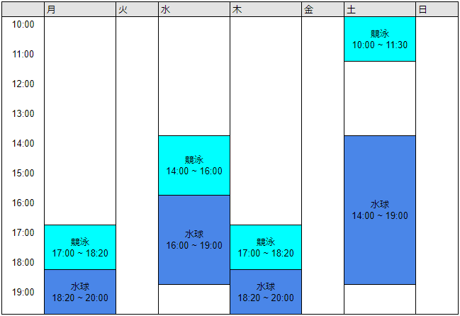
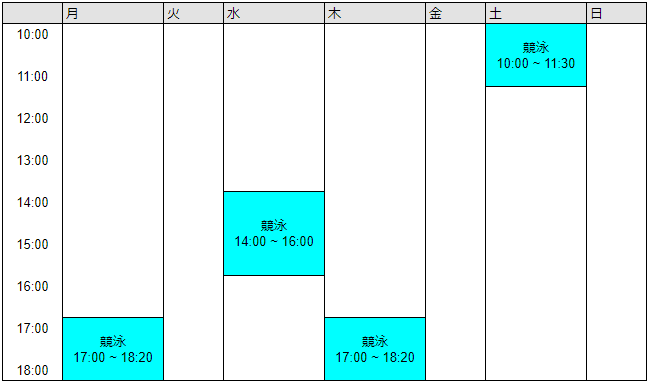

〇部活紹介
東工大の新入生へ（男子学生）
東工大水泳部では競泳と水球の練習を行っています。現在1年生5人、2年生7人、3年生6人、4年生8人が選手として活動しています。指導者はおらず部員が自ら必要なことを考え、メニューを作成し、個人として、チームとしてのレベルアップを図っています。部員の多くが競泳、水球の経験者であり、限られた練習時間の中で密度の濃い練習を行うよう努力しています。競泳においては多くの部員が大会の度にBestを更新し、関東学生水泳競技大会、全国国公立水泳競技大会の標準タイムを突破する部員も少なくありません。また、メインターゲットとしている東部国公立水泳競技大会で決勝に残るものもいます。水球では関東学生水球リーグ戦をメインターゲットとしています。二部リーグで参戦しているこの大会では、二部上位3チームにはインカレ出場権が与えられるので、二部上位チームと戦える力をつけ、インカレ出場権を獲得することを目指して日々練習に励んでいます。
東工大水泳部は経験者、未経験者を問わず、多くの新入部員を募集しています 。東工大に入学する学生にとって大学生活は最後のスポーツに真剣に取り組める時間だと思います。高校、中学と水泳をやってきてもうあの頃みたいな辛い練習はしたくないけど、やるからには真剣にやらなきゃつまらないと思っている人や、大学から何か新しいことを真剣にやってみたいと思っている人には是非一度水泳部を見学に来てもらいたいです。部員はみんなプールでは真剣に練習に取り組み、試合では熱くなり、プールから出ればワイワイと騒ぐのが大好きな人ばかりです。練習や部室で多くの時間をともに過ごし、部員みんなで夏は旅行、冬はスキーに行くなどし大学生活においてかけがえのない仲間に出会うことが出来ると思います。
男子部では上のように1日に女子部と競泳、男子部だけで水球を両方練習します。
活動場所は東工大の体育館内にあるプールです。プールや部室へのアクセスはこちらへ
東工大の新入生へ（女子学生）
現在1年生3人、2年生2人、3年生8人、4年生4人が選手として、1年生2人、2年生4人がマネージャーとして活動しています。女子は男子と一緒に競泳のみ活動を行っています。練習時間は以下の通りですが、週１回以上来れれば、入部を認めているので、大学でいろいろな事をしたいと思っている人も一度見学にきてもらえれば雰囲気が分かると思います。東工大内の屋内プールでの活動なので日焼けの心配もありません。女子が運動できる＆女子の割合が高い希少な部活で、先輩後輩も関係なくみんな仲がいいので、楽しく活動できると思います。競泳以外にも、女子部だけの楽しいイベントもありますよ!見学＆体験いつでもお待ちしています。
活動場所は東工大の体育館内にあるプールです。プールや部室へのアクセスはこちらへ
燕水会
燕水会は東工大水泳部のOB/OG会です。毎年夏にはOB/OGと現役の結束を深めるリレー・水球大会が開かれ、その 後は懇親会で交流を深めています。若手OBは各マスターズ水泳大会や水球大会に出場し成績を残しています。また60歳以上を対象とした「シニア燕水会」も発足し、毎年懇親旅行を行っ ています。
- 佐久間会長(S34)による『燕水会誕生秘話』（蔵前ジャーナル100周年記念号掲載）
- 西田さん(S59)による『水球黄金時代の幕開けと 終焉』（同）